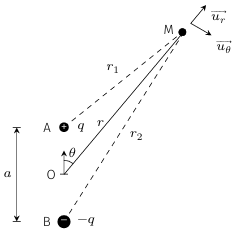
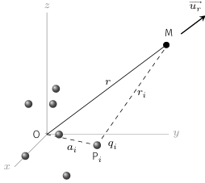
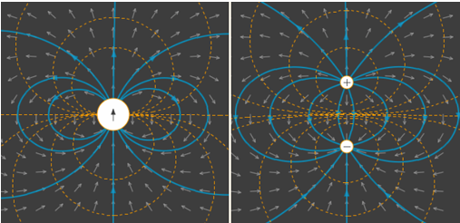

On appelle doublet électrostatique, un ensemble de deux charges ponctuelles opposées \(+q\)
et \(-q\) séparées d’une distance \(a\).

Doublet électrostatique.
La charge \(+q\) est placée au point \(A\) et la charge \(-q\) est placée au point \(B\).
On note que l’axe \(AB\) est un axe de révolution. De plus, le plan contenant le doublet et
le point \(M\), est un plan de symétrie de la distribution. Par conséquent :
$$
\quad \overrightarrow{E}(M) = E_r(r,\theta)\overrightarrow{u_r}
+E_{\theta}(r,\theta)\overrightarrow{u_{\theta}}
$$
Si l’on note \(r_1=AM\) et \(r_2=BM\), le potentiel créé par ce doublet en un point \(M\)
s’écrit :
$$
\quad V(M) = \frac{q}{4\pi\varepsilon_0}\left(\frac{1}{r_1}-\frac{1}{r_2}\right)
$$
Notons que l’équipotentielle \(v=0\) est l’ensemble des points tels que \(r_1=r_2\) ce qui
correspond au plan médiateur du segment \([AB]\), lequel représente également un plan
d’anti-symétrie de la distribution.
Cherchons maintenant à calculer le potentiel loin du doublet ; c’est-à-dire à une
distance \(r \gg a\). Calculons le terme prépondérant du potentiel à l’aide d’un
développement limité.
On a (
théorème de Pythagore généralisé) :
$$
\quad r_1^2 = \| \overrightarrow{AO} + \overrightarrow{OM} \|^2
= \left(\frac{a}{2}\right)^2 + r^2 - ar\cos(\theta)
$$
D’où
$$
\quad \frac{1}{r_1} =
\frac{1}{r}\left( 1 +\left(\frac{a}{2r}\right)^2 -\frac{a\cos(\theta)}{r} \right)^{-1/2}
$$
Si on se contente d’une approximation à l’ordre 1 en \(a/r\), on trouve :
$$
\quad \frac{1}{r_1} \simeq \frac{1}{r}\left( 1 + \frac{a\cos(\theta)}{2r} \right)
$$
De même pour \(1/r_2\) (\(\theta \to \pi - \theta\)) :
$$
\quad \frac{1}{r_2} \simeq \frac{1}{r}\left( 1 - \frac{a\cos(\theta)}{2r} \right)
$$
Finalement, loin du dipôle, on peut approcher le potentiel par :
$$
\quad V = \frac{qa\cos(\theta)}{4\pi\varepsilon_0r^2} \quad / \quad r \gg a
$$
Cela constitue l’approximation dipolaire. On remarque que le potentiel décroît à grande
distance. En effet, loin du doublet, on voit une charge totale nulle ce qui explique
que les effets électriques diminuent plus vite que ceux d’une charge ponctuelle.
Moment dipolaire électrique
On note également que le potentiel dépend du produit \(qa\) qui représente le moment
dipolaire électrique du doublet. On définit le moment dipolaire \(\overrightarrow{p}\) du
doublet par :
$$
\quad \boxed{ \overrightarrow{p} = q \overrightarrow{BA} }
$$
orienté de la charge négative vers la charge positive. Ce moment s’exprime en \(\rm{C.m}\).
On peut alors exprimer le potentiel dans l’approximation dipolaire à l’aide du moment
dipolaire :
$$
\quad \boxed{ V_{\mathrm{dipolaire}}
= \frac{\overrightarrow{p} \cdot \overrightarrow{u_r}}{4\pi\varepsilon_0r^2}
= \frac{\overrightarrow{p} \cdot \overrightarrow{OM} }{4\pi\varepsilon_0r^3} }
$$
Généralisation
Généralisons le résultat précédent en considérant une distribution localisée decharges.On
suppose qu’un ensemble de \(N\) charges (\(q_1,\dotsc,q_N\)) occupe un volume fini. Nous
noterons \(a\), la dimension caractéristique de cette distribution. Cette distribution peut
par exemple modéliser une molécule, un ion complexe, un métal chargé etc. On cherche à
calculer les effets électriques (potentiel et champ électrique) dans l’approximation
dipolaire, c’est-à-dire pour des points \(M\) situés à une distance grande devant \(a\).
Plaçons l’origine \(O\) d’un repère dans la distribution puis adoptons les notations
suivantes :
\(r=OM\), la distance entre \(O\) et \(M\)
\(r_i=P_iM\) où \(P_i\) repère la position de la charge \(q_i\)
\(a_i=OP_i\) la distance entre \(O\) et \(P_i\)

Distribution de 𝑁 charges ponctuelles.
Le potentiel électrostatique créé en M par la distribution de charges s’écrit :
$$
\quad V(M) = \sum_{i=1}^N \frac{q_i}{4\pi\varepsilon_0r_i}
$$
avec
$$
\quad r_i = \| \overrightarrow{OM} - \overrightarrow{OP_i} \|
= r\sqrt{1 + \left(\frac{a_i}{r}\right)^2
-2\frac{\overrightarrow{OM} \cdot \overrightarrow{OP_i}}{r^2} }
$$
Puisque \(a_i/r \ll 1\), effectuons un développement limité du potentiel à l’ordre 2 en
\(a_i/r\) à l’aide de la relation \( (1 + \varepsilon )^{-1/2} = 1 - 1/2\varepsilon
+ 3/8\varepsilon^2 + o(\varepsilon^2)\) :
$$
\quad V(M) = \sum_{i=1}^N \frac{q_i}{4\pi\varepsilon_0r}
\left( 1+ \frac{\overrightarrow{OM} \cdot \overrightarrow{OP_i}}{r^2}
+ \frac{ 3\left(\overrightarrow{OP_i} \cdot \overrightarrow{u_r}\right)^2
- {OP_i}^2}{2r^2}
+ o\left( \frac{a_i^2}{r^2} \right)
\right)
$$
Si l’on néglige les termes d’ordre supérieur à 2, on obtient l’approximation
suivante :
$$
\quad V(M) \simeq \frac{\sum_{i}q_i}{4\pi\varepsilon_0r}
+ \frac{\left(\sum_{i}q_i\overrightarrow{OP_i}\right)\cdot\overrightarrow{u_r}}
{4\pi\varepsilon_0r^2}
+ \frac{\mathcal{Q}}{4\pi\varepsilon_0r^3}
$$
On voit apparaître des termes décroissant en \(1/r^n\). Les trois termes sont les premiers
termes de ce que l’on appelle le développement multipolaire de \(V(M)\) :
Le premier terme désigne le terme unipolaire. C’est le terme prépondérant lorsque la
charge totale est non nulle. Par exemple, un ion crée un champ quasi-newtonien dès que
l’on se trouve à une distance grande devant sa taille.
Le deuxième terme représente le terme dipolaire. Il devient prépondérant lorsque la
charge totale est nulle à condition que \(\sum_{i}q_i\overrightarrow{OP_i} \neq
\overrightarrow{0}\). C’est par exemple le cas d’une molécule neutre qui ne présente pas
de centre de symétrie (on parle de molécule polaire), comme par exemple \(\rm{H_2O}\),
\(\rm{HCl}\), etc.
Le troisième terme représente le terme quadrupolaire. Il décroit en \(1/r^3\)
et dépend du moment quadrupolaire \(\mathcal{Q} = \sum_{i}\frac{1}{2}q_ia_i^2
(3\cos^2(\theta_1)-1)\) qui mesure l’écart à la symétrie sphérique.
Pour une distribution électriquement neutre, on définit le moment dipolaire
électrique :
$$
\quad \boxed{ \overrightarrow{p} = \sum_{i}q_i \overrightarrow{OP_i} }
$$
Si ce moment dipolaire est non nul, le potentiel électrique s’écrit dans l’approximation
dipolaire :
$$
\quad \boxed{ V_{\mathrm{dipolaire}}
= \frac{\overrightarrow{p} \cdot \overrightarrow{u_r}}{4\pi\varepsilon_0r^2} }
$$
Moment dipolaire électrique
La notion de dipôle trouve naturellement sa place dans la description de certaines molécules
pour lesquelles le barycentre des charges positives ne coïncide plus avec le barycentre des
charges négatives. En effet, supposons une distribution de charges électriquement neutre
contenant \(N_+\) charges positives \(\{{q_i}^+\}\) et \(N_-\) charges négatives
\(\{{q_i}^-\}\). L’électroneutralité se traduit par la relation :
$$
\quad N_+ {q_i}^+ = N_- {q_i}^- = \mathcal{Q}
$$
Cette neutralité électrique induit que le moment dipolaire ne dépend pas du choix de
l’origine. En effet,
$$
\quad \sum_{i}q_i \overrightarrow{OP_i}
= \sum_{i}q_i \overrightarrow{OO'} + \sum_{i}q_i \overrightarrow{O'P_i}
= \sum_{i}q_i \overrightarrow{O'P_i}
$$
Notons maintenant \(B_+\) le barycentre des charges positives et \(B_−\) celui des charges
négatives. Par définition du barycentre, on a :
$$
\quad \mathcal{Q} \overrightarrow{OB_+}
= \sum_{\mathrm{charges +}}{q_i}^+ \overrightarrow{OP_i}
$$
et
$$
\quad - \mathcal{Q} \overrightarrow{OB_-}
= \sum_{\mathrm{charges -}}{q_i}^- \overrightarrow{OP_i}
$$
Par conséquent
$$
\quad \sum_{i}q_i \overrightarrow{OP_i} =
\sum_{\mathrm{charges +}}{q_i}^+ \overrightarrow{OP_i}
+ \sum_{\mathrm{charges -}}{q_i}^- \overrightarrow{OP_i}
= \mathcal{Q} \overrightarrow{OB_+} - \mathcal{Q} \overrightarrow{OB_-}
$$
Ainsi, le moment dipolaire peut se réécrire :
$$
\quad \boxed{ \overrightarrow{p} = \mathcal{Q} \overrightarrow{B_-B_+} }
$$
Le moment dipolaire est donc lié au fait que le barycentre des charges négatives ne coïncide
pas avec le barycentre des charges positives. Quand une molécule présente cette propriété on
dit qu’elle est polaire (\(\rm{H_2O}\), \(\rm{HCl}\), \(\rm{NO}\), etc.) alors que si elle
présente un centre de symétrie on dit qu’elle est apolaire (\(\rm{He}\), \(\rm{N_2}\),
\(\rm{O_2}\), \(\rm{CO_2}\), etc.)
Ordre de grandeur
Le moment dipolaire s’exprimeen \(\rm{C.m}\) dans le Système international d’unités mais les
chimistes préfèrent une unité plus adaptée au monde moléculaire : le debye
(symbole : \(\rm{D}\)). Par définition :
$$
\quad 1 \mathrm{D} = 3,33564.10^{-30}\,\mathrm{C.m}
\simeq \frac{1}{3}.10^{-29}\,\mathrm{C.m}
$$
Le tableau ci-dessous donne les moments dipolaires de shalogénures d’hydrogène mettant en
évidence le phénomène d’électronégativité : l’halogène déplace vers lui le barycentre
des charges négatives ce qui induit un moment dipolaire dirigé vers \(\rm{H}\). Ce phénomène
augmente de l’iode vers le fluor, élément le plus électronégatif du tableau périodique.
Moments dipolaires des halogénures d’hydrogène.
Halogénure
Moment dipolaire
\(\rm{HF}\)
1,97 D
\(\rm{HCl}\)
1,03 D
\(\rm{HBr}\)
0,78 D
\(\rm{HI}\)
0.38 D
Champ électrique dans l’approximation dipolaire
Intéressons au champélectrique créé par une distribution électriquement neutre et présentant
un moment dipolaire. Se plaçant dansl’approximation dipolaire, il suffit de calculer
l’opposé du gradient du potentiel \(V_{\mathrm{dipolaire}}\) :
$$
\quad \overrightarrow{E}(M) = - \overrightarrow{\mathrm{grad}}\left(
\frac{\overrightarrow{p} \cdot \overrightarrow{OM} }{4\pi\varepsilon_0r^3} \right)
$$
Utilisons les
propriétés du gradient pour écrire :
$$
\quad \overrightarrow{E}(M) =
\frac{1}{4\pi\varepsilon_0}
\left(
\frac{1}{r^3}\overrightarrow{\mathrm{grad}}\left(
\overrightarrow{p}\cdot\overrightarrow{OM}
\right)
+ \left(\overrightarrow{p}\cdot\overrightarrow{OM}\right)
\overrightarrow{\mathrm{grad}}\left(\frac{1}{r^3}\right)
\right)
$$
D’une part;
$$
\quad
\overrightarrow{\mathrm{grad}}\left(\overrightarrow{p}\cdot\overrightarrow{OM}\right) =
\overrightarrow{\mathrm{grad}}\left(p_xx + p_yy + p_zz\right) = \overrightarrow{p}
$$
Et d’autre part,
$$
\overrightarrow{\mathrm{grad}}\left(\frac{1}{r^3}\right)
= -\frac{3\overrightarrow{u_r}}{r^4}
$$
On obtient finalement
$$
\quad \overrightarrow{E}(M)
= \frac{1}{4\pi\varepsilon_0r^3} \left(
3\left(\overrightarrow{p}\cdot\overrightarrow{u_r}\right)\overrightarrow{u_r}
-\overrightarrow{p}
\right)
= \frac{1}{4\pi\varepsilon_0r^3} \left( \begin{matrix}
2p\cos(\theta) \\
p\sin(\theta) \\
0
\end{matrix} \right)
$$
où la dernière expression est obtenue en orientant le moment dipolaire suivant l’axe
\(Oz\) et en repérant le point \(M\) en coordonnées sphériques.
Notons que le champ électrique décroît en \(1/r^3\) et qu’il n’est pas isotrope.

Lignes de champ (lignes continues) et équipotentielles (lignes discontinues)
créées par un dipôle. À gauche, dans l’approximation dipolaire, à droite au voisinage de
l’origine.
La figure ci-dessus représente les lignes de champs électriques et les équipotentielles,
vues de loin et vues de près.
On remarque que les lignes de champ présentent deux lobes symétriques perpendiculaires au
moment dipolaire. On peut montrer que les lignes de champ ont pour équation paramétrique
\(r(\theta)=K'\sin^2(\theta)\).
Quant au potentiel électrique, la formule du potentiel dipolaire permet de trouver
l’équation paramétrique des équipotentielles \(r(\theta)=K\sqrt{\cos(\theta)}\).
Interactions dipolaires
Énergie d’un dipôle dans un champ électrique extérieur
Supposons un dipôle électrique situé en \(O\) et plongeant dans le champ électrique
\(\overrightarrow{E_{ext}}\) créé par une autre distribution de charges. Notons
\(V_{ext}(x,y,z)\) le potentiel associé. Insistons sur le fait que ces champs sont sans
rapport avec les champs produits par le dipôle lui même.
Cherchons à exprimer l’énergie du dipôle \(\mathcal{E}_p\) dans l’hypothèse où le champ
extérieur varie peu à l’échelle du dipôle. Si l’on adopte un modèle de distribution discrète
pour le dipôle, on a
$$
\quad \mathcal{E}_p = \sum_i q_i V_{ext}(x_i,y_i,z_i)
$$
où \(x_i\), \(y_i\) et \(z_i\) sont les coordonnées du point \(P_i\).
Compte tenu des hypothèses, contentons nous d’effectuer un développement du potentiel à
l’ordre un, autour de \(O\) :
$$
V_{ext}(x_i,y_i,z_i) \simeq V_{ext}(0,0,0) + x_i\frac{\partial V_{ext}}{\partial x}
+ y_i\frac{\partial V_{ext}}{\partial y} + z_i\frac{\partial V_{ext}}{\partial z}
= V_O - \overrightarrow{E_{ext}} \cdot \overrightarrow{OP_i}
$$
L’expression de l’énergie devient :
$$
\quad \mathcal{E}_p = \sum_i q_i V_0
- \left( \sum_i q_i \overrightarrow{OP_i}\right) \cdot \overrightarrow{E_{ext}}
$$
En vertu de la neutralité électrique du dipôle et de la définition du moment dipolaire,
on trouve
$$
\quad \boxed{ \mathcal{E}_p = -\overrightarrow{p} \cdot \overrightarrow{E_{ext}} }
$$
Dipôle rigide dans un champ uniforme
Plongeons une molécule polaire dans un champ électrostatique extérieur uniforme
\(\overrightarrow{E_{ext}}\). On suppose que cette molécule conserve un moment dipolaire
constant : on dit que le dipole est rigide. Quelles sont les actions que subit le
dipôle de la part du champ extérieur ?
Notons tout d’abord que l’énergie ne dépend pas de la position du dipôle. Cette invariance
par translation se traduit par une résultante des forces nulles. On peut le vérifier en
calculant directement la force électrique :
$$
\quad \overrightarrow{F} = \sum_i q_i \overrightarrow{E_{ext}}
= \overrightarrow{E_{ext}} \sum_i q_i = \overrightarrow{0}
$$
Ainsi la molécule n’est pas accélérée. En revanche, elle est soumise à un couple qui tend à
la faire tourner. D’après le profil de l’énergie potentielle, on voit que le système va
chercher à adopter la configuration la plus stable, c’est-à-dire celle correspondant à un
alignement du dipôle avec le champ extérieur (\(\theta=0\). On peut calculer le moment de ce
couple d’orientation :
$$
\quad \overrightarrow{\Gamma}
= \sum_i \overrightarrow{OP_i} \wedge q_i \overrightarrow{E_{ext}}
= \overrightarrow{p} \wedge \overrightarrow{E_{ext}}
$$
Ce moment tend à aligner le dipôle avec le champ électrique. Ainsi, l’action d’un champ
électrique uniforme consiste en une orientation du moment dipolaire suivant le champ
électrique.
Exemple
Lorsque l’on dissout un ion en solution aqueuse, les molécules d’eau entourent l’ion en
orientant le moment dipolaire de la molécule d’eau dans le sens du champ créé par l’ion. Ce
processus permet d’atténuer efficacement le champ électrique créé par l’ion.
Dipôle rigide dans un champ non uniforme
Supposons maintenant que le champ ne soit plus uniforme et admettons que le processus
d’orientation du moment dipolaire suivant le champ électrique soit réalisé à tout instant.
Dans ce cas, l’énergie du dipôle s’écrit \(\mathcal{E}_p = -pE_{ext}\). Les actions qui
apparaissent font en sorte de diminuer cette énergie : autrement dit, le dipôle est
soumis à une force qui tend à le déplacer dans la zone ou règne le champ le plus fort.
Mathématiquement, on a
$$
\quad \overrightarrow{F} = - \overrightarrow{\mathrm{grad}} \mathcal{E}_p
= p \overrightarrow{\mathrm{grad}} E_{ext}
$$
On en déduit qu’un dipôle rigide dans un champ non uniforme est soumis à une force qui tend
à le déplacer vers les zones où règne un champ électrique fort (une fois le dipôle aligné
avec le champ).
C’est ce qui explique par exemple qu’un bâton d’ébonite frotté (et donc chargé) attire des
morceaux de papier (isolants neutres). En effet, la tige d’ébonite crée un champ électrique
qui polarise le morceau de papier, lequel acquiert un moment dipolaire forcément orienté
avec le champ électrique. Ce champ étant plus intense près de l’extrémité du bâton, le
morceau de papier va venir s’y coller.
Interactions de van der Waals
Au sein de la matière, les molécules, bien qu’électriquement neutres, sont soumises à de
faibles interactions attractives que l’on désigne par interactions de van der Waals. Ces
interactions jouent un rôle important dans la science du vivant, en chimie et en physique
des interfaces. Elles sont par exemple responsables de la cohésion des cristaux liquides et
moléculaires. Les phénomènes de tension de surface reposent également sur cette force. On
peut interpréter l’interaction de van der Waals comme le résultat d’une interaction entre
dipôles dont l’énergie d’interaction se décompose en trois termes :
$$
\quad \mathcal{E}_{vdW} = \mathcal{E}_{Keesom} +\mathcal{E}_{Debye} +\mathcal{E}_{London}
$$
Terme de Keesom :
Deux molécules polaires de moment dipolaire \(p_1\) et \(p_2\) auront tendance à orienter
leur moment dipolaire dans le sens du champ produit par l’autre dipôle puis à se rapprocher
du fait de l’attraction vers les champs forts. Du fait de l’agitation thermique, il faut
moyenner cette interaction sur toutes les orientations possibles. On montre alors que
l’énergie d’interaction moyenne entre deux dipôles permanents distants de \(r\) s’écrit
$$
\quad \mathcal{E}_{Keesom}
= - \frac{{p_1}^2{p_2}^2}{k_BT(4\pi\varepsilon_0)^2}\frac{1}{r^6}
$$
Terme de Debye :
Il s’agit de l’interaction d’une molécule polaire avec une molécule apolaire, comme par
exemple l’interaction entre \(rm{H_2O}\) et \(rm{O_2}\). La molécule apolaire ne présente
pas de moment dipolaire en raison de l’existence d’un centre de symétrie, ce pendant, en
présence d’un champ électrique, le nuage électronique se déforme ce qui déplace le
barycentre des charges négatives et induit l’apparition d’un moment dipolaire : on
dit que la molécule s’est polarisée. Le moment dipolaire induit est proportionnel au champ
électrique extérieur :
$$
\quad \overrightarrow{p_{induit}} = \varepsilon_0 \alpha \overrightarrow{E_{ext}}
$$
où \(\alpha\)d ésigne la polarisabilité. Ainsi, en présence d’un dipôle permanent,
une molécule apolaire se polarise et a tendance à s’orienter suivant le champ polarisant
puis à se rapprocher de la molécule responsable de cette polarisation. On trouve une énergie
d’interaction
$$
\quad \mathcal{E}_{Debye}
= - \frac{{p_1}^2\alpha}{16\pi^2\varepsilon_0}\frac{1}{r^6}
$$
Force de London :
On pourrait penser que deux atomes apolaires (commeles gaz rares) ou deux molécules
apolaires (comme \(rm{O_2}\)) n’interagissent pas puisqu’ils ne présentent pas de moment
dipolaire. En réalité, chaque molécule présente un moment dipolaire fluctuant \(p(t)\) de
moyenne nulle : \(\overline{\overrightarrow{p}(t)} = \overrightarrow{0}\). Le terme
d’interaction, proportionnel à la moyenne \(\overline{p^2}\), n’est pas nulle. On montre que
le terme d’interaction varie aussi comme \(1/r^6\).
Force de van der Waals :
En résumé, dans la matière il existe des interactions attractives entre toutes les
molécules. L’énergie d’interaction s’écrit
$$
\quad \boxed { \mathcal{E}_{vdW} = - \frac{C}{r^6} }
$$
Ce qui donne naissance à une force moyenne attractive
$$
\quad \boxed { \overrightarrow{F_{vdW}} = - \frac{6C}{r^7}\overrightarrow{u_r} }
$$
La décroissance rapide de la force de van der Waals permet d’expliquer sa courte portée et
son influence dans les milieux denses (liquide et solide).
Bien entendu, les molécules finissent par se repousser lorsqu’elles sont en contact proche
du fait de la répulsion électronique et du principe d’exclusion de Pauli. Cette effet
stérique est en général décrit par un terme d’énergie répulsif en \(1/r^{12}\). Un modèle
très souvent utilisé en dynamique moléculaire pour sa simplicité, est le modèle de
Lennard-Jones :
$$
\quad \mathcal{E}_p(r)
= 4 \varepsilon \left( \left(\frac{a}{r}\right)^{12} -\left(\frac{a}{r}\right)^6 \right)
$$
où \(\varepsilon\) représente la profondeur du puits de potentiel et \(a\) la position
correspondant à une énergie nulle (voir figure ci-dessous). La profondeur du puits est de
l’ordre du \(\rm{kJ/mol}\) ce qui explique l’existence de cristaux moléculaires, à basse
température.